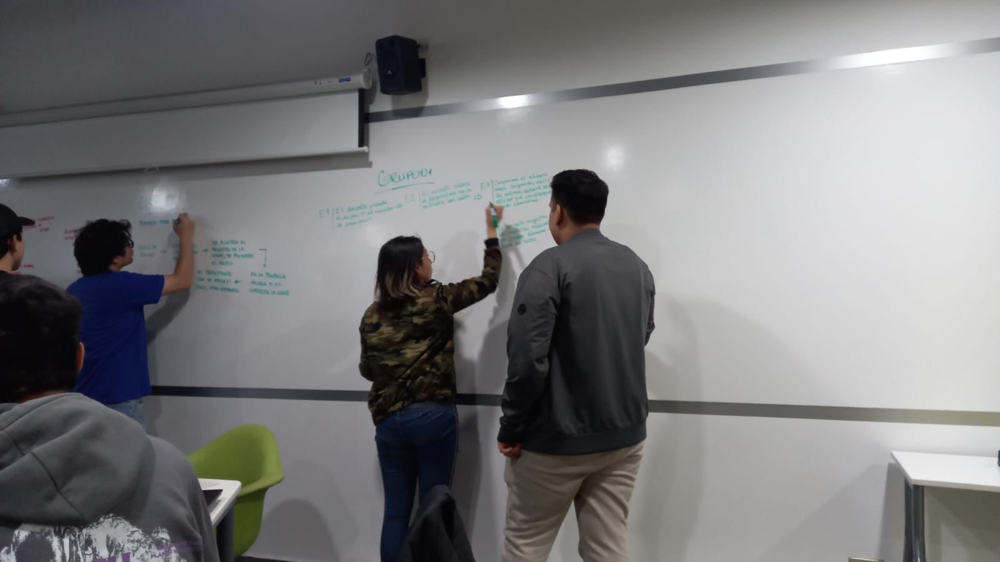

Semana 7
Clase presencial:
Exploramos la creación de diagramas de bloques y de flujo, herramientas fundamentales en empresas para visualizar y documentar procesos. Nos dividimos en grupos para el proyecto, asignando tareas específicas: el Grupo A creó un diagrama de bloques, mientras que el Grupo B proporcionó retroalimentación. Se introdujo la plataforma Whimscall para facilitar la creación de diagramas de flujo.
Clase virtual:
Nos centramos en instalar y usar Arduino IDE en nuestras computadoras, reconociendo su importancia para programadores. Aprendimos a identificar y corregir errores de conexión en la consola cuando Arduino está conectado, enfatizando la necesidad de leer la consola constantemente.